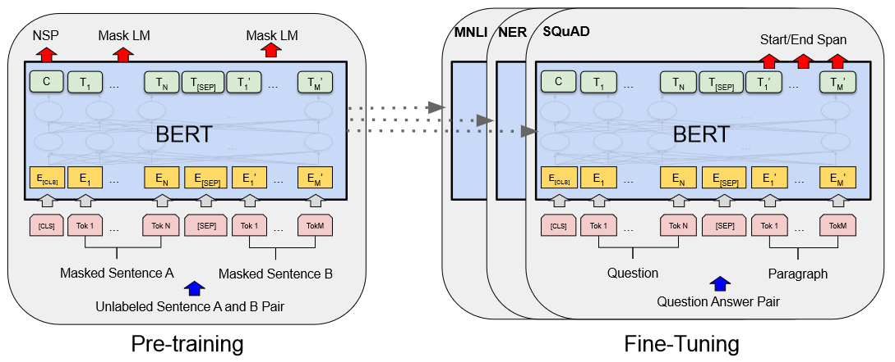
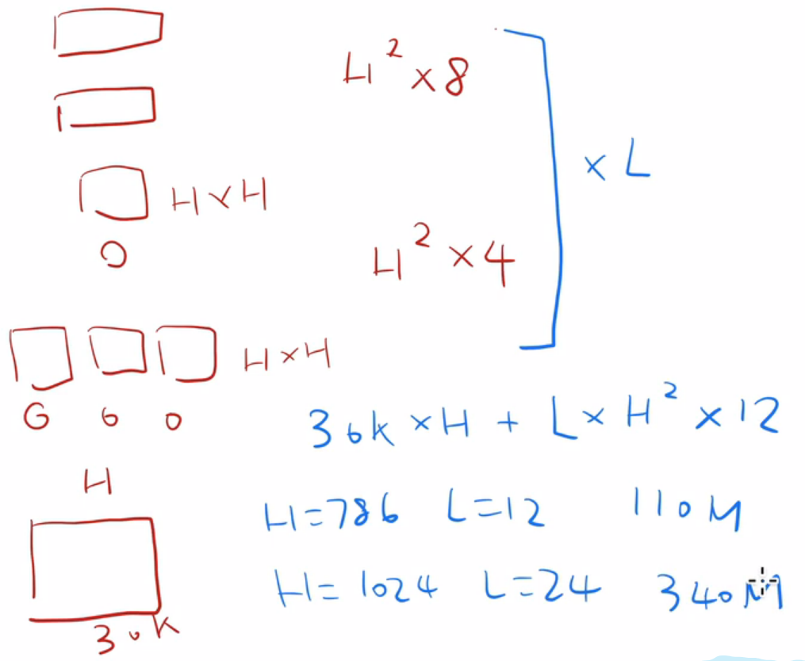
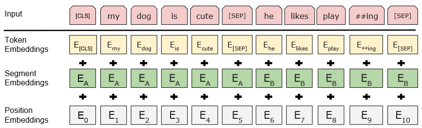
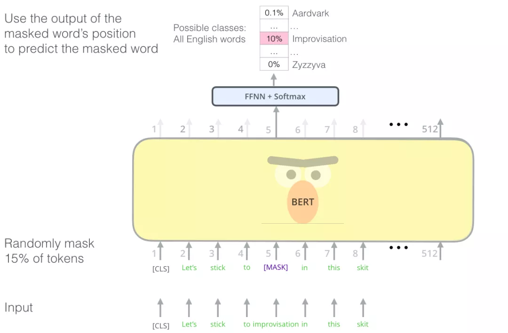
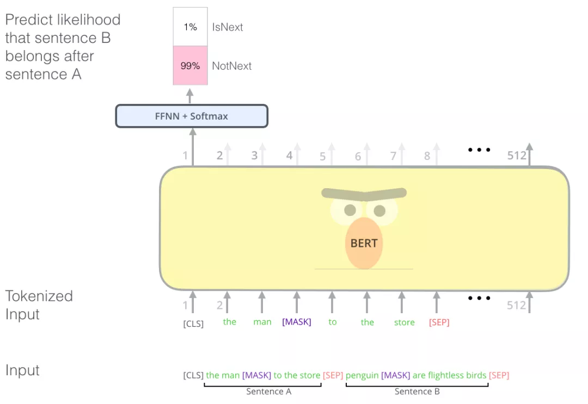
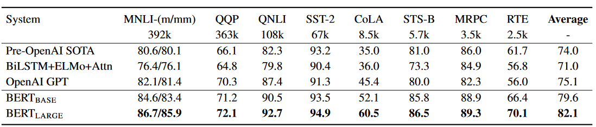
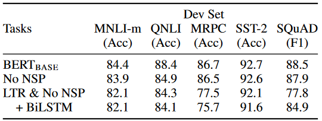

论文精读 BERT
2.BERT
论文链接：1810.04805.pdf (arxiv.org)
解读视频：BERT 论文逐段精读【论文精读】_哔哩哔哩_bilibili
参考代码：personal/bert_torch at main · wdndev/personal · GitHub
1.题目+作者
“BERT” (Devlin 等, 2018, p. 1) 自然语言中中近三年最重要的文章；在计算机视觉里面很早就能够在一个大的数据集（比如说ImageNet）上训练出一个CNN模型，用这个模型可以用来处理一大片的机器视觉任务，来提升他们的性能；但是在自然语言处理里面，在BERT之前一直没有一个深的神经网络使得它训练好之后能够帮处理一大片的NLP任务，在NLP中很多时候还是对每个任务构造自己的神经网路，然后再做训练；BERT的出现使得我们能够在一个大的数据集上面训练好一个比较深的神经网络，然后应用在很多的NLP任务上面，这样既简化了NLP任务的训练，又提升了它的性能，所以BERT和它之后的一系列工作使得自然语言处理在过去三年中有了质的飞跃；
- pre-training：在一个数据集上训练好一个模型，这个模型主要的目的是用在另外一个任务上面，所以如果另外一个任务叫training的话，那么在大的数据集上训练的这个任务（模型）就叫做pre-training，即training之前的任务
- deep：更深的神经网络
- bidirectional：双向的
- transformers：
- language understanding：transformer主要是用在机器翻译这个小任务上，这里使用的是一个更加广义的词，就是对语言的理解
2.摘要
BERT是一个新的语言表示模型，BERT的名字来自于：
- Bidirectional
- Encoder
- Representation
- Transformer
它的意思是transformer这个模型双向的编码器表示，这四个词跟标题是不一样的
它的想法是基于ELMo
- ELMo来自于芝麻街中人物的名字，芝麻街是美国的一个少儿英语学习节目
- BERT是芝麻街中另外一个主人公的名字
- 这篇文章和之前的ELMo开创了NLP的芝麻街系列文章
BERT和最近的一些语言的表示模型有所不同
- Peters 引用的是ELMo
- Radfor 引用的是GPT
BERT和ELMo、GPT的区别：
- BERT是设计用来训练深的双向表示，使用的是没有标号的数据，再联合左右的上下文信息，因为这样的设计导致训练好的BERT只用加一个额外的输出层，就可以在很多NLP的任务（比如问答、语言推理）上面得到一个不错的结果，而且不需要对任务做很多特别的架构上的改动
- GPT考虑的是单向（用左边的上下文信息去预测未来），BERT同时使用了左侧和右侧的信息，它是双向的（Bidirectional）
- ELMO用的是一个基于RNN的架构，BERT用的是transformer，所以ELMo在用到一些下游任务的时候需要对架构做一点点调整，但是BERT相对比较简单，和GPT一样只需要改最上层就可以了
3.Introduction
3.1自然语言任务和预训练
在语言模型中，预训练可以用来提升很多自然语言的任务
自然语言任务包括两类
- 句子层面的任务（sentence-level）：主要是用来建模句子之间的关系，比如说对句子的情绪识别或者两个句子之间的关系
- 词元层面的任务（token-level）：包括实体命名的识别（对每个词识别是不是实体命名，比如说人名、街道名），这些任务需要输出一些细腻度的词元层面上的输出
预训练在NLP中已经流行了有一阵子了，在计算机视觉里面已经用了很多年了，同样的方法用到自然语言上面也不会很新，但是在介绍BERT的时候，很有可能会把NLP做预训练归功于BERT，BERT不是第一个提出来的而是BERT让这个方法出圈了让后面的研究者跟着做自然语言的任务
3.2 预训练任务的策略
在使用预训练模型做特征表示的时候，一般有两类策略
- 一个策略是基于特征的，代表作是ELMo，对每一个下游的任务构造一个跟这个任务相关的神经网络，它使用的RNN的架构，然后将预训练好的这些表示（比如说词嵌入也好，别的东西也好）作为一个额外的特征和输入一起输入进模型中，希望这些特征已经有了比较好的表示，所以导致模型训练起来相对来说比较容易，这也是NLP中使用预训练模型最常用的做法（把学到的特征和输入一起放进去作为一个很好的特征表达）
- 另一个策略是基于微调的，这里举的是GPT的例子，就是把预训练好的模型放在下游任务的时候不需要改变太多，只需要改动一点就可以了。这个模型预训练好的参数会在下游的数据上再进行微调（所有的权重再根据新的数据集进行微调）
上述两个途径在预训练的时候都是使用一个相同的目标函数，都是使用一个单向的语言模型（给定一些词去预测下一个词是什么东西，说一句话然后预测这句话下面的词是什么东西，属于一个预测模型，用来预测未来，所以是单向的）
3.3 现有技术的限制
本文的主要想法：现在这些技术会有局限性，特别是做预训练的表征的时候，主要的问题是标准的语言模型是单向的，这样就导致在选架构的时候会有局限性
- 在GPT中使用的是一个从左到右的架构（在看句子的时候只能从左看到右），这样的坏处在于如果要做句子层面的分析的话，比如说要判断一个句子层面的情绪是不是对的话，从左看到右和从右看到左都是合法的，另外，就算是词元层面上的一些任务，比如QA的时候也是看完整个句子再去选答案，而不是一个一个往下走
因此如果将两个方向的信息都放进去的话，应该是能够提升这些任务的性能的
3.4 BERT
提出了BERT，BERT是用来减轻之前提到的语言模型是一个单向的限制，使用的是一个带掩码的语言模型（masked language model），这个语言模型是受Cloze任务的启发（引用了一篇1953年的论文）
- 这个带掩码的语言模型每一次随机地选一些资源，然后将它们盖住，目标函数就是预测被盖住的字，等价于将一个句子挖一些空完后进行完形填空；
- 跟标准的语言模型从左看到右的不同之处在于：带掩码的语言模型是允许看到左右的信息的（相当于看完形填空的时候不能只看完形填空的左边，也需要看完形填空的右边），这样的话它允许训练深的双向的transformer模型；
- 在带掩码的语言模型之外还训练了一个任务，预测下一个句子，核心思想是给定两个句子，然后判断这两个句子在原文里面是相邻的，还是随机采样得来的，这样就让模型学习了句子层面的信息；
3.5 文章的贡献
- 展示了双向信息的重要性，GPT只用了单向，之前有的工作只是很简单地把一个从左看到右的语言模型和一个从右看到左的语言模型简单地合并到一起，类似于双向的RNN模型（contact到一起），这个模型在双向信息的应用上更好
- 假设有一个比较好的预训练模型就不需要对特定任务做特定的模型改动。BERT是第一个在一系列的NLP任务上（包括在句子层面上和词元层面上的任务）都取得了最好的成绩的基于微调的模型
- 代码和模型全部放在：https://github.com/google-research/bert
4.结论
最近一些实验表明，使用无监督的预训练是非常好的，这样使得资源不多（训练样本比较少的任务也能够享受深度神经网络）,本文主要的工作就是把前人的工作扩展到深的双向的架构上，使得同样的预训练模型能够处理大量的不同的自然语言任务
简单概括一下：本文之前的两个工作一个叫ELMo，它使用了双向的信息但是它网络架构比较老，用的是RNN，另外一个工作是GPT，它用的是transformer的架构，但是它只能处理单向的信息，因此本文将ELMo双向的想法和GPT的transformer架构结合起来就成为了BERT
- 具体的改动是在做语言模型的时候不是预测未来，而是变成完形填空
5.相关工作
6.BERT
6.1 pre-training and fine-tuning
BERT中有两个步骤：
- 预训练：在预训练中，这个模型是在一个没有标号的数据集上训练的
- 微调：在微调的时候同样是用一个BERT模型，但是它的权重被初始化成在预训练中得到的权重，所有的权重在微调的时候都会参与训练，用的是有标号的数据
每一个下游的任务都会创建一个新的BERT模型，虽然它们都是用最早预训练好的BERT模型作为初始化，但是每个下游任务都会根据自己的数据训练好自己的模型。
虽然预训练和微调不是BERT独创的，在计算机视觉中用的比较多，但是作者还是做了一个简单的介绍（在写论文的时候遇到一些技术需要使用的时候，而且可能应该所有人都知道，最好不要一笔带过，论文是需要自洽的，后面的人读过来可能不太了解这些技术，但是这些技术又是论文中方法不可缺少的一部分的话，最好还是能够做一个简单的说明）

- 预训练的时候输入是一些没有标号的句子对
- 这里是在一个没有标号的数据上训练出一个BERT模型，把他的权重训练好，对下游的任务来说，对每个任务创建一个同样的BERT模型，但是它的权重的初始化值来自于前面预训练训练好的权重，对于每一个任务都会有自己的有标号的数据，然后对BERT继续进行训练，这样就得到了对于某一任务的BERT版本。
[CLS]是在每个输入示例前添加的特殊符号，[SEP]是特殊的分隔符标记（例如，分隔问题/答案）
6.2 模型架构
BERT模型就是一个多层的双向transformer编码器，而且它是直接基于原始的论文和它原始的代码，没有做改动
（1）三个参数
- L：transformer块的个数
- H：隐藏层的大小
- A：自注意力机制中多头的头的个数
（2）两个模型
- BERT base：它的选取是使得跟GPT模型的参数差不多，来做一个比较公平的比较
- BERT large：用来刷榜
- BERT中的模型复杂度和层数是一个线性关系，和宽度是一个平方的关系
（3）怎样把超参数换算成可学习参数的大小

模型中可学习参数主要来自两块
- 嵌入层：就是一个矩阵，输入是字典的大小（假设是30k），输出等于隐藏单元的个数（假设是H）
- transformer块：transformer中有两部分：一个是自注意力机制（它本身是没有可学习参数的，但是对多头注意力的话，他会把所有进入的K、V、Q分别做一次投影，每一次投影的维度是等于64的，因为有多个头，头的个数A乘以64得到H，所以进入的话有key、value、q，他们都有自己的投影矩阵，这些投影矩阵在每个头之间合并起来其实就是HH的矩阵了，同样道理拿到输出之后也会做一次投影，他也是一个HH的矩阵，所以对于一个transformer块，他的自注意力可学习的参数是H的平方乘以4），一个是后面的MLP（MLP里面需要两个全连接层，第一个层的输入是H，但是它的输出是4H，另外一个全连接层的输入是4H，输出是H，所以每一个矩阵的大小是H*4H，两个矩阵就是H的平方乘以8），这两部分加起来就是一个transformer块中的参数，还要乘以L（transformer块的个数）
所以总参数的个数就是30k乘以H（这部分就是嵌入层总共可以学习的参数个数）再加上L层乘以H的平方再乘以12
6.3 输入和输出
（1）输入形式
对于下游任务的话，有些任务是处理一个句子，有些任务是处理两个句子，所以为了使BERT模型能够处理所有的任务，它的输入既可以是一个句子，也可以是一个句子对
- 这里的一个句子是指一段连续的文字，不一定是真正的语义上的一段句子
- 输入叫做一个序列，可以是一个句子，也可以是两个句子
- 这和之前文章里的transformer是不一样的：transformer在训练的时候，他的输入是一个序列对，因为它的编码器和解码器分别会输入一个序列，但是BERT只有一个编码器，所以为了使它能够处理两个句子，就需要把两个句子变成一个序列
（2）序列的构成
这里使用的切词的方法是WordPiece，核心思想是：
- 假设按照空格切词的话，一个词作为一个token，因为数据量相对比较大，所以会导致词典大小特别大，可能是百万级别的，那么根据之前算模型参数的方法，如果是百万级别的话，就导致整个可学习参数都在嵌入层上面
- WordPiece是说假设一个词在整个里面出现的概率不大的话，那么应该把它切开看它的一个子序列，它的某一个子序列很有可能是一个词根，这个词很有可能出现的概率比较大话，那么就只保留这个子序列就行了。这样的话，可以把一个相对来说比较长的词切成很多一段一段的片段，而且这些片段是经常出现的，这样的话就可以用一个相对来说比较小的词典就能够表示一个比较大的文本了
切好词之后如何将两个句子放在一起
- 序列的第一个词永远是一个特殊的记号**
[CLS]**，CLS表示classification，这个词的作用是BERT希望最后的输出代表的是整个序列的信息（比如说整个句子层面的信息），因为BERT使用的是transformer的编码器，所以它的自注意力层中每一个词都会去看输出入中所有词的关系，就算是词放在第一的位置，它也是有办法能够看到之后的所有词
把两个句子合在一起，但是因为要做句子层面的分类，所以需要区分开来这两个句子，这里有两个办法：
- 在每一个句子后面放一个特殊的词：
[SEP]表示separate - 学一个嵌入层来表示这个句子到底是第一个句子还是第二个句子
[CLS]是第一个特殊的记号表示分类，中间用一个特殊的记号[SEP]分隔开，每一个token进入BERT得到这个token的embedding表示（对BERT来讲，就是输入一个序列，然后得到另外一个序列），最后transformer块的输出就表示这个词元的BERT表示，最后再添加额外的输出层来得到想要的结果。
（3）embedding
对于每一个词元进入BERT的向量表示，它是这个词元本身的embedding加上它在哪一个句子的embedding再加上位置的embedding，如下图所示：

- 上图演示的是BERT的嵌入层的做法，即由一个词元的序列得到一个向量的序列，这个向量的序列会进入transformer块
- 上图中每一个方块是一个词元
- token embedding：这是一个正常的embedding层，对每一个词元输出它对应的向量
- segment embedding：表示是第一句话还是第二句话
- position embedding：输入的大小是这个序列的最大长度，它的输入就是每个词元这个序列中的位置信息（从零开始），由此得到对应的位置的向量
- 最终就是每个词元本身的嵌入加上在第几个句子的嵌入再加上在句子中间的位置嵌入
- 在transformer中，位置信息是手动构造出来的一个矩阵，但是在BERT中不管是属于哪个句子，还是具体的位置，它对应的向量表示都是通过学习得来的
6.4 预训练
在预训练的时候，主要有两个东西比较关键
- 目标函数
- 用来做预训练的数据
（1）TASK #1：Masked LM
对于输入的词元序列，如果词元序列是由WordPiece生成的话，那么它有15%的概率会随机替换成掩码，但是对于特殊的词元（第一个词元和中间的分割词元不做替换），如果输入序列长度是1000的话，那么就要预测150个词。

这里也会存在问题：因为在做掩码的时候会把词元替换成一个特殊的token（[MASK]），在训练的时候大概会看到15%的词元，但是在微调的时候是没有的，因为在微调的时候不用这个目标函数，所以没有mask这个东西，导致在预训练和微调的时候所看到的数据会有多不同。
解决方法：对这15%的被选中作为掩码的词有80%的概率是真的将它替换成这个特殊的掩码符号（[MASK]），还有10%的概率将它替换成一个随机的词元（其实是加入了一些噪音），最后有10%的概率什么都不干，就把它存在那里用来做预测（附录中有例子）。
（2）TASK #2：Next Sentence Prediction（NSP）
在问答（QA）和自然语言推理（NLI）中都是句子对，如果让它学习一些句子层面的信息也不错，具体来说，一个输入序列里面有两个句子：a和b，有50的概率b在原文中间真的是在a的后面，还有50%的概率b就是随机从别的地方选取出来的句子，这就意味着有50%的样本是正例（两个句子是相邻的关系），50%的样本是负例（两个句子没有太大的关系），加入这个目标函数能够极大地提升在QA和自然语言推理的效果（附录中有例子）

1 | # 示例 |
预训练过程很大程度上遵循现存文献的语言模型预训练，使用BooksCorpus（800M个单词）和English Wikipedia（25亿个单词）。为了获取长的连续序列，使用文档级的语料（文章）比使用像Billion Word Benchmark这样无序的句子级语料更为重要。
（3）预训练数据
使用了两个数据集
- BooksCorpus
- English Wikipedia
应该使用文本层面的数据集，即数据集里面是一篇一篇的文章而不是一些随机打乱的句子，因为transformer确实能够处理比较长的序列，所以对于整个文本序列作为数据集效果会更好一些。
6.5 微调
BERT和一些基于编码器解码器的架构有什么不同
- transformer是编码器解码器架构
- 因为把整个句子对都放在一起放进去了，所以自注意力能够在两端之间相互能够看到，但是在编码器解码器这个架构中，编码器一般是看不到解码器的东西的，所以BERT在这一块会更好一点，但是实际上也付出了一定的代价（不能像transformer一样能够做机器翻译）
在做下游任务的时候会根据任务设计任务相关的输入和输出，好处是模型其实不需要做大的改动，主要是怎么样把输入改成所要的那个句子对
- 如果真的有两个句子的话就是句子a和b
- 如果只有一个句子的话，比如说要做一个句子的分类，b就没有了
然后根据下游的任务要求，要么是拿到第一个词元对应的输出做分类或者是拿到对应的词元的输出做所想要的输出，不管怎么样都是在最后加一个输出层，然后用一个softnax得到想要的标号
跟预训练比微调相对来说比较便宜，所有的结果都可以使用一个TPU跑一个小时就可以了，使用GPU的话多跑几个小时也行
7.实验
7.1 GLUE
它里面包含了多个数据集，是一个句子层面的任务
BERT就是把第一个特殊词元[CLS]的最后的向量拿出来，然后学习一个输出层w，放进去之后用softmax就能得到标号，这就变成了一个很正常的多分类问题了
下图表示了在这个分类任务上的结果

- average表示在所有数据集上的平均值，它表示精度，越高越好
- 可以发现就算是BERT就算是在base跟GPT可学习参数差不多的情况下，也还是能够有比较大的提升
7.2 SQuAD v1.1
斯坦福的一个QA数据集
QA任务是说给定一段话，然后问一个问题，需要在这段话中找出问题的答案（类似于阅读理解），答案在给定的那段话中，只需要把答案对应的小的片段找出来就可以了（找到这个片段的开始和结尾）
- 就是对每个词元进行判断，看是不是答案的开头或者答案的结尾
具体来说就是学两个向量S和E，分别对应这个词元是答案开始的概率和答案最后的概率，它对每个词元（也就是第二句话中每个词元）的S和Ti相乘，然后再做softmax，就会得到这个段中每一个词元是答案开始的概率，公式如下图所示，同理也可以得出是答案末尾的概率:
- Ti表示第 i 个输入词元对应的最后一个隐藏向量
注意：在做微调的时候的参数设置
- 使用了3个epoch，扫描了3遍数据
- 学习率是5e-5
- batchsize是32
用BERT做微调的时候结果非常不稳定，同样的参数、同样的数据集，训练十遍，可能会得到不同的结果。最后发现3其实是不够的，可能多学习几遍会好一点
BERT用的优化器是adam的不完全版，当BERT要训练很长时间的时候是没有影响的，但是如果BERT只训练一小段时间的话，它可能会带来影响（将这个优化器换成adam的正常版就可以解决这个问题了）
8.Ablation Studies
介绍了BERT中每一块最后对结果的贡献
8.1 Effect of Pre-training Tasks

- No NSP：假设去掉对下一个句子的预测
- LTR & No NSP：使用一个从左看到右的单向的语言模型（而不是用带掩码的语言模型），然后去掉对下一个句子的预测
- + BiLSTM：在上面加一个双向的LSTM
从结果来看，去掉任何一部分，结果都会打折扣
8.2 Effect of Model Size
BERT base中有1亿的可学习参数，BERT large中有3亿可学习的参数，相对于之前的transformer，可学习参数数量的提升还是比较大的。
当模型变得越来越大的时候，效果会越来越好，这是第一个展示将模型变得特别大的时候对语言模型有较大提升的工作。
虽然现在GPT3已经做到1000亿甚至在向万亿级别发展，但是在三年前，BERT确实是开创性地将一个模型推到如此之大，引发了之后的模型大战
8.3 Feature-based Approach with BERT
假设不用BERT做微调而是把BERT的特征作为一个静态特征输进去会怎样
结论是效果确实没有微调好，所有用BERT的话应该用微调
9.评论
写作
- 先写了BERT和GPT的区别
- 然后介绍了BERT模型
- 接下来是在各个实验上的设置
- 最后对比结果，结果非常好
这篇文章认为本文的最大贡献就是双向性（写文章最好能有一个明确的卖点，有得有失，都应该写出来）
- 但是今天来看，这篇文章的贡献不仅仅只有双向性，还有其它东西
- 从写作上来说，至少要说选择双向性所带来的不好的地方是什么，做一个选择，会得到一些东西，也会失去一些东西：和GPT比，BERT用的是编码器，GPT用的是解码器，得到了一些好处，但是也有坏处（比如做机器翻译和文本摘要比较困难，做生成类的东西就没那么方便了）
- 分类问题在NLP中更加常见，所以NLP的研究者更喜欢用BERT，会更容易一些
BERT所提供的是一个完整的解决问题的思路，符合了大家对于深度学习模型的期望：在一个很大的数据集上训练好一个很深很宽的模型，这个模型拿出来之后可以用在很多小问题上，通过微调可以全面提升这些小数据上的性能